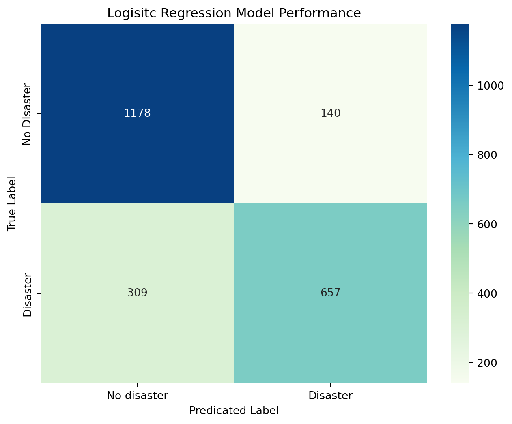

import pandas as pd
import numpy as np
from sklearn.model_selection import train_test_split
from sklearn.feature_extraction.text import TfidfVectorizer, CountVectorizer
from sklearn.linear_model import LogisticRegression
from sklearn.metrics import classification_report, f1_score, accuracy_score, confusion_matrix
from sklearn.metrics import roc_curve, auc, roc_auc_score
import re
import string
import matplotlib.pyplot as plt
import seaborn as snsIntroduction
In this week’s discussion section, we will use a dataset containing tweets related to different disasters. For each observation (tweet), there is an outcome variable that classifies the disasters talked about in the tweet as real (1), or not (0). Rather than having multiple predictors as our X, we will have one predictor - the tweet. However, each individual word can be thought of as their own predictor, each contributing to predicting our outcome variable.
Data
The dataset this week is a commonly used dataset for NLP (Natural Language Processing). The dataset can be found here. Disasters.csv includes a text variable, which contains the tweet as a string. Our target variable, target, is a binary outcome variable with 1 representing the disaster discussed as real, and 0 representing the disaster discussed as not real.
Excercise
Load in libraries and data
# Read in the data
disaster = pd.read_csv('../data/disaster.csv')Clean text data
Work with a partner and annotate what each line in the code chunk below is doing.
# Cleaning of text data
def preprocess(text):
text = text.lower() # Converts to lowercase
text=text.strip() # Removes leading/ trailing whitespace
text=re.sub(r'<.*?>','', text) # Remove html sytax
text = re.sub(r'[^\w\s]','',text) # removes punctuation
text = re.sub(r'\[[0-9]*\]',' ',text) # removes references
text = re.sub(r'\d',' ',text) # removes digits
text = re.sub(r'\s+', ' ', text) # collapse multiple spaces into a single space
return text# Apply string cleaning to text variable
disaster['clean_text'] = disaster['text'].apply(preprocess)
disaster.head()| id | keyword | location | text | target | clean_text | |
|---|---|---|---|---|---|---|
| 0 | 1 | NaN | NaN | Our Deeds are the Reason of this #earthquake M... | 1 | our deeds are the reason of this earthquake ma... |
| 1 | 4 | NaN | NaN | Forest fire near La Ronge Sask. Canada | 1 | forest fire near la ronge sask canada |
| 2 | 5 | NaN | NaN | All residents asked to 'shelter in place' are ... | 1 | all residents asked to shelter in place are be... |
| 3 | 6 | NaN | NaN | 13,000 people receive #wildfires evacuation or... | 1 | people receive wildfires evacuation orders in... |
| 4 | 7 | NaN | NaN | Just got sent this photo from Ruby #Alaska as ... | 1 | just got sent this photo from ruby alaska as s... |
What about stop words?
# Proof that Tfidf veoctorizer excludes stopwords
stop_words_ex = ["On March 5th, I will crush my capstone presentation with my awesome team!"]
vectorizer_english = TfidfVectorizer(stop_words = "english")
vectorizer_english.fit_transform(stop_words_ex)
print("Remaining words")
print(vectorizer_english.get_feature_names_out())Remaining words
['5th' 'awesome' 'capstone' 'crush' 'march' 'presentation' 'team']Logistic Regression
# Split into test and train
X_train, X_test, y_train, y_test = train_test_split(disaster["clean_text"], disaster['target'], test_size = 0.3, random_state = 42)# Vectorize words
tfidf_vectorizer = TfidfVectorizer(stop_words = "english")
X_train_tfidf = tfidf_vectorizer.fit_transform(X_train)
X_test_tfidf = tfidf_vectorizer.transform(X_test)# Initialize a logistic regression model and fit to vectorized training data
lr_model = LogisticRegression(random_state = 42)
lr_model.fit(X_train_tfidf, y_train)
y_pred = lr_model.predict(X_test_tfidf)Logistic Regression Results
# Calculate LR accuracy
accuracy = accuracy_score(y_test, y_pred)
print(f"Accuracy: {accuracy}")
# Create confusion matrix for correctly/incorrectly predicting outcome variable
cm = confusion_matrix(y_test, y_pred)
plt.figure(figsize = (8,6))
sns.heatmap(cm, annot = True, fmt = 'd', cmap = "GnBu",
xticklabels = ["No disaster", "Disaster"],
yticklabels = ["No Disaster", 'Disaster'])
plt.title('Logisitc Regression Model Performance')
plt.ylabel('True Label')
plt.xlabel('Predicated Label')
plt.show()Accuracy: 0.803415061295972
Test model with new data
new_text = [
"BREAKING: Massve earthquake hits the coast",
"I love watching disaster movies on Netflix",
"Thousands evacuated as hurricance approaches",
"Theeeesssss is a disassterrrrr",
"It's Windy!",
"The Palisade fire has damaged over 7,000 structures.",
"The Palisade wildfire has damaged over 7,000 structures.",
]
# Preprocess new phrases
cleaned_new_text =[preprocess(text) for text in new_text]
# Transform using TF-IDF vectorizer
new_features = tfidf_vectorizer.transform(cleaned_new_text)
# Make predictions
predictions = lr_model.predict(new_features)
# Check outcomes
for text, pred in zip(new_text, predictions):
print(f"Text: {text}")
print(f"Prediction: {'Real Disaster' if pred == 1 else 'Not a Real Disaster'}\n")Text: BREAKING: Massve earthquake hits the coast
Prediction: Real Disaster
Text: I love watching disaster movies on Netflix
Prediction: Not a Real Disaster
Text: Thousands evacuated as hurricance approaches
Prediction: Real Disaster
Text: Theeeesssss is a disassterrrrr
Prediction: Not a Real Disaster
Text: It's Windy!
Prediction: Not a Real Disaster
Text: The Palisade fire has damaged over 7,000 structures.
Prediction: Not a Real Disaster
Text: The Palisade wildfire has damaged over 7,000 structures.
Prediction: Real Disaster